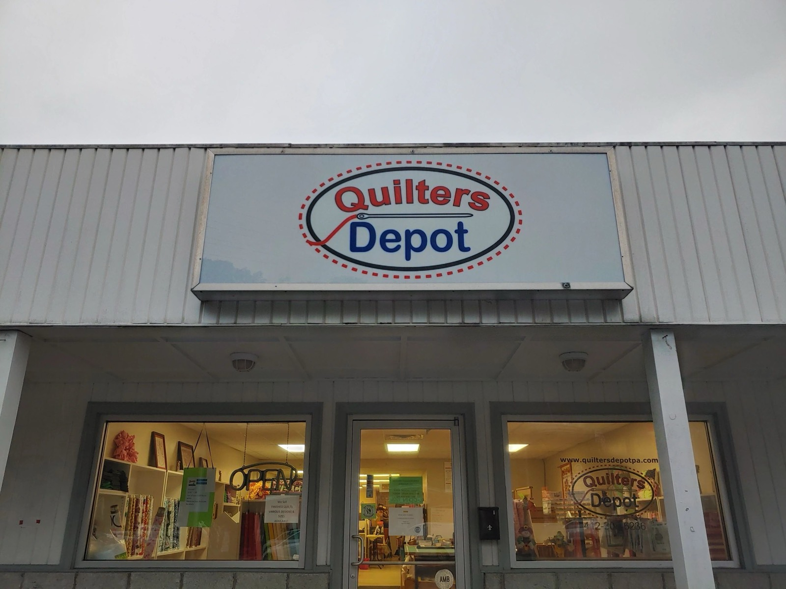
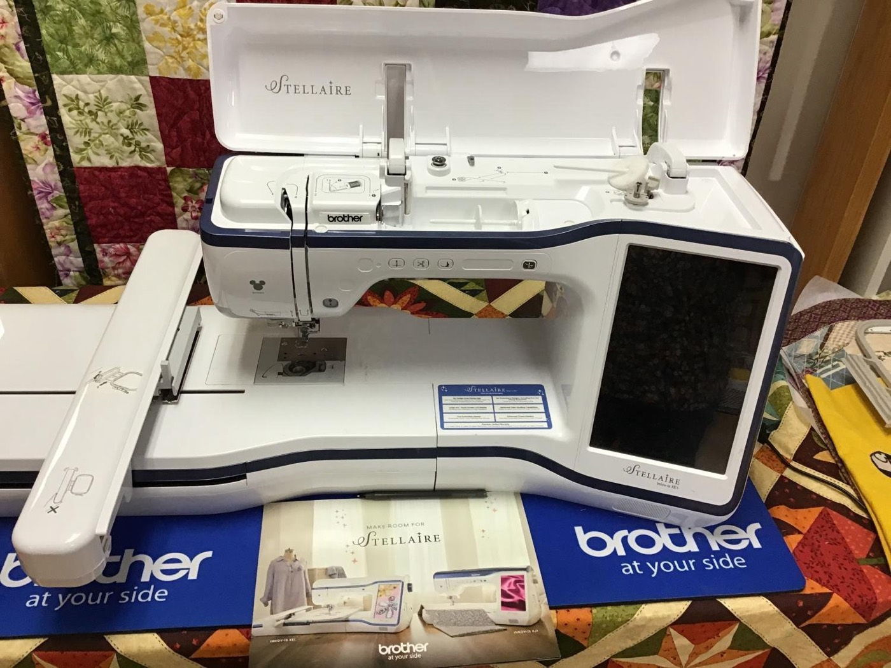
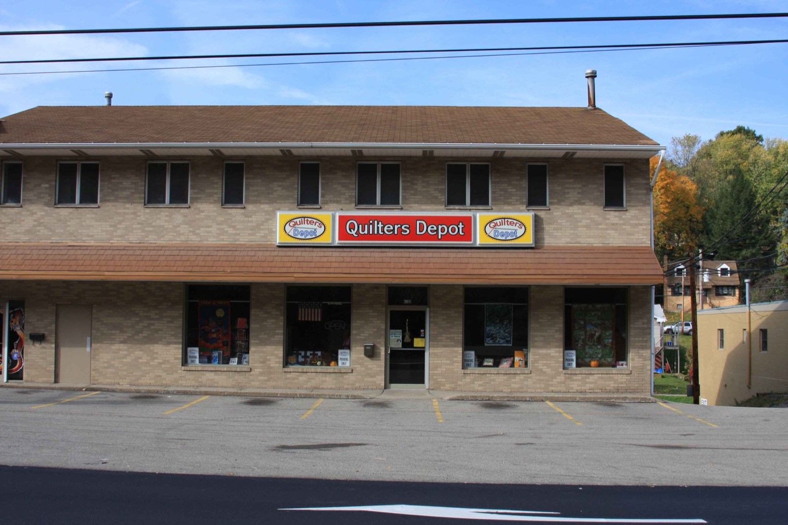

Fabric & backings
Quilting cotton fabrics (some flannels), panels, pre-cuts and fat quarters, plus a wide selection of 108" wide fabrics for backings.
Browse fabricShannon Shops · 3370 Library Rd, Castle Shannon
Quilting cotton, flannels, 108" backings, batting, Superior threads, patterns and yarn. Plus classes, open sews and Jenn's longarm and memory quilt service, just south of Pittsburgh.

In the shop
Come in and browse, or order online. Ask the ladies at the counter about special orders on some items.
Quilting cotton fabrics (some flannels), panels, pre-cuts and fat quarters, plus a wide selection of 108" wide fabrics for backings.
Browse fabricQuilters Dream and Nine Acres batting, Superior threads, interfacings, notions, Handi Quilter notions and patterns.
Browse notionsKnitting, crocheting and cross stitch, with a monthly project at Yarn Time hosted by Emily Klaczak.
Yarn TimeBrother sewing machines in the shop, and Dad (Phil) is our tech who fixes the Brother machines.
See machinesJenn quilts your top on a Handi Quilter Avante with a ten-foot table. Meandering or Pro-Stitcher work, binding on request.
Rates & how to prepareTurn the pieces that matter into a quilt you'll keep. Stop in or call to talk it through with Jenn.
Memory quilts
In the shop: Brother StellaireLearn & sew together
Want to learn to quilt? Start with Quilting 101, then keep going with 201. Or bring whatever you're working on to an open sew and stay all day.

Our earlier shop on Library RdAbout us
Quilters Depot is a dream come true for Jennifer and Pauline Shushnar. Pauline and her daughter Jennifer are second and third generation quilters, and they set out to build a store where everyone is welcome.
This store is the quilters' version of “Cheers”, where everyone will know your name. Take time to talk to each other, learn from one another, make new friends, and have a good time.
Jenn & PaulineLearned to embroider and crochet as a child, then sewing and quilting from her mom. Teaches Quilting 101 and runs the longarm.
Grew up in Lawrenceville. A quilter and an avid redworker.
Handyman, Brother machine tech, and sometimes the one cutting your fabric.
2026 charities
Work on these at Kathy's Korners, an open sew or at home. Patterns and help are in the shop.
Staff and customers make simple dresses for Dress A Girl Around the World (Hope 4 Women International). We supply the instructions and help you make them.
Crochet or knit beds and kitty sacks, sew little cotton beds from leftover batting, or make fleece chew toys. Donations go in the box at checkout.
Fabric, fat quarters, pre-cuts, panels, patterns, batting, notions, yarn and gift cards.
Visit the shop
Near Signature Desserts and The Trolley Barn. Please note: no public restroom.
| Tuesday – Friday | 10am – 5pm |
| Saturday | 9am – 3pm |
| Sunday & Monday | Closed |